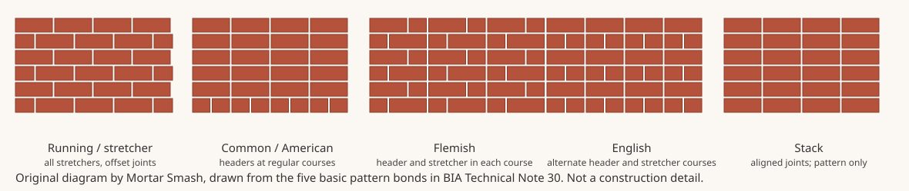

Mortar Smash › Trade guides › Which brick bond for which job
Short answer
Running or stretcher bond is the usual choice for modern cavity walls and brick veneer; common or American bond and English or Flemish bond are the traditional ways to bond a solid wall with headers; stack bond is a pattern only and needs ties or reinforcement. Those five are the basic pattern bonds in BIA Technical Note 30 (March 1999). Metal-tie spacing, header percentages and reinforcement are set by the current building code and the project specification, not by a pattern drawing alone.
The five basic pattern bonds
Technical Note 30 distinguishes structural bond (how units or ties make the wall act as one), pattern bond (what you see on the face) and mortar bond (adhesion of mortar to the units). The note lists five basic structural bonds in common use that also create typical face patterns:
- Running bond (often called stretcher bond on site) is all stretchers, with each course offset. There are no headers, so metal ties are usually used. The note says this bond is used largely in cavity walls and veneered brick walls.
- Common or American bond is running bond with a course of full-length headers at regular intervals, usually every fifth, sixth or seventh course. The headers provide structural bonding as well as pattern. Corners of a header course are started with a three-quarter brick each way.
- Flemish bond alternates stretchers and headers in every course, with headers in one course centred on the stretchers above and below. Where headers are not needed for structural bond, half-brick 'snap' or 'clipped' headers may be used. Three stretchers between headers is garden-wall bond; two stretchers is double-stretcher garden-wall bond.
- English bond alternates whole courses of headers and stretchers, with headers centred on the stretchers and stretcher joints aligned vertically from course to course. English cross, or Dutch, bond is the same idea except that stretcher joints in alternate courses do not line up.
- Block or stack bond is a pattern bond only. Vertical joints align and there is no overlap. The note says the wall is usually tied to the backing with rigid steel ties, and that in large areas and in load-bearing work it is advisable to reinforce the horizontal joints. Dimensionally accurate units are needed if the head joints are to stay in line.
In a structurally bonded solid wall, stretchers give longitudinal strength and headers tie the wall through its thickness. Technical Note 30 also describes bonding with metal ties or with grout in a collar joint, and says the metal-tie method is generally recommended for exterior walls because it resists rain penetration better and allows slight movement between facing and backing. Follow current code for tie size and spacing; the 1999 note should not be used as a substitute for today's rules. Wall-tie layout for cavity walls is a structural decision and is not tabulated on this page.
Which bond for which job
| Bond | Typical jobs | Watch-outs |
|---|---|---|
| Running / stretcher | Cavity walls, brick veneer, most modern house walls | No headers: the facing must be tied to the backing as the specification requires |
| Common / American | Solid walls that need a simple header bond and a familiar pattern | Start header-course corners with three-quarter closures; keep header intervals as specified |
| Flemish or English | Solid or feature walls where a traditional face pattern is wanted | Snap headers are only for pattern; structural headers must pass through as designed |
| Garden wall variants | Long garden or boundary walls that keep a Flemish look with fewer headers | Still a pattern choice; structural tie or header rules come from the design |
| Stack | Decorative panels and contemporary feature faces | Not a structural bond on its own; ties or joint reinforcement are required as specified |
The note also reminds readers that colour, texture and joint profile change the look of the same bond, and that raked joints are hard to make weather-tight and are not recommended where heavy rain, high wind or freezing is likely. For joint profiles see mortar joint profiles. For the units themselves see which bricks for which jobs.

Which brick bond for which job FAQ
What is stretcher bond used for?
Stretcher bond is running bond: every brick is a stretcher and each course is offset, usually by half a brick. BIA Technical Note 30 says there are no headers in this bond, so metal ties are usually used, and that running bond is used largely in cavity wall construction and veneered walls of brick.
What is the difference between English bond and Flemish bond?
English bond uses alternate courses of headers and stretchers. Flemish bond alternates headers and stretchers in every course, with headers centred on the stretchers in the courses above and below. Both can be structural bonds in a solid wall, or face patterns that use snap headers where a through header is not required.
What is common or American bond?
It is running bond with a course of full-length headers at regular intervals, usually every fifth, sixth or seventh course, according to Technical Note 30. The headers provide structural bonding as well as the pattern. A three-quarter brick should start each way from the corner at the header course.
Is stack bond strong enough for a load-bearing wall?
Not by itself. Technical Note 30 calls stack bond a pattern bond with no overlapping of units. It says the pattern is usually tied to the backing with rigid steel ties, and that in large wall areas and in load-bearing construction it is advisable to reinforce the wall with steel in the horizontal mortar joints. Use only as the structural design allows.
What is garden wall bond?
It is a Flemish-bond variant with more stretchers between each header. Technical Note 30 says three stretchers alternating with a header is garden wall bond, and two stretchers is double-stretcher garden wall bond. Four or even five stretchers between headers are also used. Treat it as a face pattern and follow the specified structural bond or tie layout.
Do I have to use headers in a cavity wall?
Not in running or stretcher bond, which has no headers. The facing is then tied to the backing with metal ties, which Technical Note 30 generally recommends for exterior walls. The number, type and spacing of ties must follow the current building code and the project specification, not a historic pattern note alone.
Sources
Figures and uses are quoted or condensed from the sources above, which were read on 11 November 2026. Codes and project specifications differ by country and job; where they conflict with this page, follow them.
Published 11 November 2026 by Mortar Smash. General information only, not engineering or code advice.